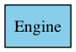
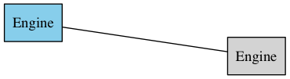
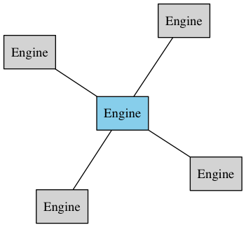

class: title, inverse New kits on the block ## SwarmKit & InfraKit --- class: title # SwarmKit --- # SwarmKit - 멀티 노드 시스템을 위한 오픈소스 클러스터 툴킷 - 도커 엔진(Docker Engine) >= 1.12 (Docker swarm mode) - 외부 데이터 스토어가 필요 없음 (자체 내장) (mesos -> zookeeper, k8s -> etcd) - 노드간 자동으로 보안 키 공유와 갱신(TLS)으로 노드 인증 - DNS기반 서비스 디스커버리(Service discovery) - 로드 밸런싱(Load balancing) - SwarmKit/swarmd/swarmctl → libcontainer/containerd/container-ctr --- layout: true # Swarm mode .console[ ```bash $docker swarm init ``` ] --- <div class="center"> <p>  </p> </div> --- layout: true # Swarm mode .console[ ```bash $docker swarm join --token $TOKEN $MANAGER_IP:PORT ``` ] --- <div class="center"> <p>  </p> </div> --- <div class="center"> <p>  </p> </div> --- layout: false # Swarm architecture  --- layout: false # Demo - dind (docker in docker)을 사용해서 worker nodes을 만듬 .console[ ```bash SWARM_TOKEN=$(docker swarm join-token -q worker) SWARM_MASTER=$(docker info | grep -w 'Node Address' | awk '{print $3}') NUM_WORKERS=3 for i in $(seq "${NUM_WORKERS}"); do docker run -d --privileged --name worker-${i} \ --hostname=worker-${i} -p ${i}2375:2375 docker:1.12.1-dind \ dockerd-entrypoint.sh ; docker --host=localhost:${i}2375 \ swarm join --token ${SWARM_TOKEN} ${SWARM_MASTER}:2377 done ``` ] --- # Node - Docker engine이고, Swarm cluster의 멤버 - Manager node과 Worker node으로 구분 - Manager node도 Task을 받아서 Service을 실행할수 있다 - Manager node는 Worker nodes에서 실행될 Task와 Node 정보를 관리 # Service,Task - Service는 Swarm cluster에서 실행될 Tasks을 정의 - Service = image + command - Task는 한 노드에서 실행되는 작업 단위 --- # Service - Replicated service과 Global service으로 구분 .console[ - Service 생성 ```bash $docker service create --name ping --replicas 2 alpine ping 8.8.8.8 ``` - Service 상태 ```bash $docker service ps ping ``` ] --- # Service Constraints .console[ - 라벨을 가지고 서비스가 실행될 노드 선택에 제한을 줄수 있다 ```bash $docker service create --constraint="node.labels.security == high" ... ``` - 노드(Node) 라벨은 다음과 같이 관리할수 있다 ```bash $docker node update --label-add security=high $NODE_ID_OR_NAME ``` ] - https://docs.docker.com/engine/reference/commandline/service_create/#specify-service-constraints---constraint --- # Routing mesh : Publishing ports .console[ ```bash $docker service create --name my-web \ --publish 8080:80 \ --replicas 2 \ nginx $docker network ls NETWORK ID NAME DRIVER SCOPE e73a26ef806e bridge bridge local 62e5259bafc4 docker_gwbridge bridge local 1e101ab8b2da host host local 68lukwj0iddg ingress overlay swarm ``` ] --- # Routing mesh : Publishing ports  --- # Routing mesh : Publishing ports  --- # Swarm mode service discovery .console[ ```bash $ docker service inspect \ --format='{{json .Endpoint.VirtualIPs}}' \ my-web [{"NetworkID":"7m2rjx0a97n88wzr4nu8772r3" "Addr":"10.0.0.2/24"}] ``` ] - `--endpoint-mode vip` 이면, 서비스(Service)의 Virtual IP을 생성됨 (default) - VIP는 서비스 이름으로 DNS에 추가됨 - 가쉽 프로토콜(Gossip protocol)기반으로 스윔(Swarm)안의 컨테이너(Container)가 VIP,DNS 정보를 공유 - `HEALTHCHECK --interbal=3s --timeout=1s CMD curl -f http://localhost:5000/ || exit 1` - DNSRR(DNS Roundrobin)도 지원 `--endpoint-mode dnsrr` --- # Next - Cluster volume plugin : NFS,Flocker,infinit... - Pluggable scheduler : https://github.com/docker/swarmkit/issues/1412 (What components of Swarmkit (swarm 1.12) are pluggable?) - `--network host` : https://github.com/docker/swarmkit/issues/989 (Do we want to allow services to use the host's network namespace?) - Scheduler Rebalancing : https://github.com/docker/swarmkit/issues/310 - Elastic autoscaling : https://github.com/docker/swarmkit/issues/1663 --- layout: false class: title,inverse # Infrakit